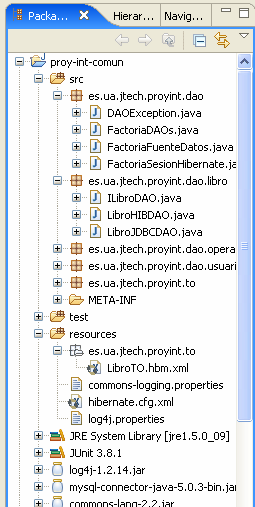

Aplicación web con Hibernate
Introducción
En esta sesión de integración incorporaremos Hibernate a nuestra aplicación web, de forma que los TOs (TransferObjects) sean objetos creados a través de Hibernate, en lugar de JDBC. Vamos a trabajar únicamente en la capa de persistencia, y vamos a comprobar que los cambios realizados no afectan a las capas superiores. De hecho, vamos a incorporar Hibernate parcialmente, de forma que, de forma totalmente transparente a la aplicación, estaremos trabajando simultáneamente con TOs creados mediante JDBC, y TOs creados a través de Hibernate
Creación de una nueva "rama" en CVS
El proyecto de integración de Hibernate se guardará en el CVS como una "rama" diferente a la principal. Esta rama la utilizaremos para integrar Spring. La rama principal del CVS (HEAD) la retomaremos en las siguientes sesiones de integración ( Servidor de aplicaciones, EJBs, Mensajes...).
Para crear la nueva rama:
- Desde el menú de contexto del proyecto proy-int-comun, seleccionamos Team > Branch.
- El nombre de la nueva rama será: "b07-integracion-Hibernate".
- Introducir el nombre de la versión del proyecto: "v056-integracion-Struts"
- Marcar la casilla Start working in the branch immediately.
- Pulsar OK.
Hacemos lo mismo para el proyecto proy-int-web:
- Desde el menú de contexto del proyecto proy-int-web, seleccionamos Team > Branch.
- Con Ctrl-Espacio nos aparecerá la etiqueta anterior: "b07-integracion-Hibernate" y la seleccionamos.
- Introducir el nombre de la versión del proyecto: "v056-integracion-Struts"
- Marcar la casilla Start working in the branch immediately.
- Pulsar OK.
Fijaos que a la derecha del nombre del proyecto nos aparece la etiqueta de la rama (b07-integracion-Hibernate.
Ahora ya estamos en disposición de comenzar la sesión de integración con Hibernate
Librerías necesarias para trabajar con Hibernate
En primer lugar, vamos a incluir las librerias necesarias para utilizar Hibernate en nuestra aplicación, en el directorio proy-int-comun\lib. Dichas librerías son las siguientes:
- antlr-2.7.6rc1.jar
- asm.jar
- asm-attrs.jar
- cglib-2.1.3.jar
- commons-collections-2.1.1.jar
- commons-logging-1.0.4.jar (sustituye a commons-logging.jar, que tenéis actualmente)
- dom4j-1.6.1.jar
- ehcache-1.1.jar
- hibernate3.jar
- jdbc2_0-stdext.jar
- jta.jar
- log4j-1.2.14.jar (ya está, no hace falta añadirla)
- mysql-connector-java-5.0.3-bin.jar (ya está, no hace falta añadirla)
Las librerías Hibernate las añadiremos en el buildPath del proyecto de integración común, y también las copiaremos en el directorio proy-int-web\WebContent\WEB-INF\lib (esta última acción hará que Eclipse automáticamente las incluya en el buildPath del proyecto de integración web
Las librerías Hibernate las podéis obtener del directorio lib de los ejercicios de las sesiones de Hibernate, o bien del directorio lib de la distribución de Hibernate que hemos utilizado
Fichero de configuración de Hibernate
Una vez que hemos incluido las librerías de Hibernate para que sean accesibles, tenemos que generar el fichero de configuración de Hibernate (hibernate.cfg.xml), en el que indicaremos cuál es la base de datos subyacente, entre otras cosas, y así poder iniciar Hibernate.
Las propiedades de Hibernate para la SessionFactory que debemos configurar son las siguientes:
<?xml version="1.0" encoding="UTF-8"?>
<!DOCTYPE hibernate-configuration PUBLIC
"-//Hibernate/Hibernate Configuration DTD 3.0//EN"
"http://hibernate.sourceforge.net/hibernate-configuration-3.0.dtd">
<hibernate-configuration>
<session-factory>
<!-- Definimos el nombre JNDI del datasource para utilizar el pool de conexiones de Tomcat -->
<property name="hibernate.connection.datasource">java:comp/env/jdbc/biblioteca</property>
<!-- Dialecto de la base de datos, se debe especificar siempre -->
<property name="hibernate.dialect">org.hibernate.dialect.MySQLDialect</property>
<!-- Vamos a mostrar las sentencias sql de Hibernate por pantalla -->
<property name="show_sql">true</property>
<!-- Habilitamos la gestión automática del contexto de sesiones de Hibernate -->
<property name="current_session_context_class">thread</property>
<!-- Actualizamos el esquema de la base de datos existente -->
<property name="hbm2ddl.auto">update</property>
</session-factory>
</hibernate-configuration>
El fichero de configuración de Hibernate lo crearemos en el directorio proy-int-comun\resources
Ficheros de mapeado
Vamos a mapear el transfer object LibroTO, para lo cual crearemos el fichero LibroTO.hbm.xml siguiente:
<?xml version="1.0"?>
<!DOCTYPE hibernate-mapping PUBLIC
"-//Hibernate/Hibernate Mapping DTD 3.0//EN"
"http://hibernate.sourceforge.net/hibernate-mapping-3.0.dtd">
<hibernate-mapping package="es.ua.jtech.proyint.to">
<class name="LibroTO"
table="libro">
<!-- clave primaria natural -->
<id name="isbn" column="isbn"/>
<property name="titulo" length="64"/>
<property name="autor" length="64"/>
<property name="numPaginas" type="integer"/>
</class>
</hibernate-mapping>
Fijaos que hemos incluido el nombre del paquete en el atributo package, de esta forma no tenemos que proporcionar el nombre completo de la clase en el atributo name.
A diferencia de los ejemplos vistos en las sesiones de Hibernate, la tabla libro utiliza una clave primaria natural, es decir, una clave con un significado para el negocio. Por lo tanto no es necesario utilizar la etiqueta <generator>.
Hemos restringido la longitud de los campos titulo y autor a 64, puesto que así se han definido en el script de creación de la base de datos (en proy-int-comun/db/biblioteca.sql).
El fichero de mapeado lo situaremos en el paquete es.ua.jtech.proyint.to, que habremos creado previamente en el directorio proy-int-comun/resources. En el caso de realizar el mapeado de las otras dos clases UsuarioTO y OperacionTO, situaremos también aquí los correspondientes ficheros .hbm.xml de forma que cuando despleguemos la aplicación estarán en el mismo directorio que las clases transfer object a las que hacen referencia. Recordemos también que ésto es una recomendación, no una exigencia de Hibernate.
No olvidéis incluir el fichero de mapeado en el fichero de configuración de hibernate (hibernate.cfg.xml), añadiendo la siguiente línea anidada en la etiqueta <session-factory>:
<mapping resource="es/ua/jtech/proyint/to/LibroTO.hbm.xml"/>
Factoría de sesiones Hibernate
Puesto que nuestra aplicación solamente utiliza una BD, únicamente necesitaremos utilizar una SessionFactory. Vamos a crear una clase que denominaremos FactoriaSesionHibernate que crea y configura la SessionFactory y que tendremos que utilizar posteriormente para poder abrir sesiones con la base de datos para realizar las operaciones pertinentes con los objetos persistentes de nuestra aplicación.
El código de FactoriaSesionHibernate.java es similar al que ya hemos utilizado en los ejercicios, de forma que creamos una variable global en su inicializador estático denominada sessionFactory, y que se llama una única vez por la máquina virtual de Java cuando carga la clase.
package es.ua.jtech.proyint.dao;
import org.apache.commons.logging.Log;
import org.apache.commons.logging.LogFactory;
import org.hibernate.*;
import org.hibernate.cfg.*;
public class FactoriaSesionHibernate {
private static final SessionFactory sessionFactory;
private static Log logger = LogFactory.getLog(FactoriaSesionHibernate.class.getName());
static {
try {
// Crea la SessionFactory a partir de hibernate.cfg.xml
sessionFactory = new Configuration().configure().buildSessionFactory();
} catch (Throwable ex) {
logger.error("Fallo en la creación de la SessionFactory.",e);
throw new ExceptionInInitializerError(ex);
}
}
public static SessionFactory getSessionFactory() {
return sessionFactory;
}
}
El fichero FactoriaSesionHibernate.java lo situaremos en el paquete es.ua.jtech.proyint.dao.
Creación del DAO generado mediante Hibernate
El siguiente paso será implementar la clase LibroHIBDAO.java (en el paquete es.ua.jtech.proyint.dao.libro), que es la que realizará las operaciones que interaccionan directamente con la base de datos.
Para poder realizar los cambios y comprobar que éstos funcionan, método a método, copiaremos el fichero LibroJDBCDAO con el nuevo nombre LibroHIBDAO, y sobre éste vamos a ir realizando las modificaciones que nos interesen. Aseguraos de que el atributo logger hace referencia a la clase LibroHIBDAO.
El primer método que vamos a cambiar es el de listado de libros: List<LibroTO> getAllLibros(). Borramos el código y tenemos que cambiarlo por código que utilice Hibernate. En este caso, haremos uso de una transacción mediante la sesión actual, tal y como hemos hecho en los ejercicios, y crearemos una consulta HQL para recuperar todos los libros de la base de datos.
Tendremos que importar las librerias de hibernate:
import org.hibernate.Query; import org.hibernate.Session; import es.ua.jtech.proyint.dao.FactoriaSesionHibernate;
y borrar las de JDBC.
Fijaos que tenemos que el método getAllLibros() devuelve una lista con elementos LibroTO, y que la consulta a Hibernate nos devolverá un objeto de tipo List. Por lo tanto, una vez cerrada la transacción, podemos, por ejemplo, recorrer dicha lista, hacer un cast de cada uno de los elementos, y añadirlos en una variable local de tipo List<LibroTO>, que es la que devolveremos como resultado del método.
Para probar la ejecución del nuevo método getAllLibros(), tenemos que modificar la clase FactoriaDAOs (en el paquete es.ua.jtech.proint.dao) para que devuelva un objeto de tipo LibroHIBDAO:
public class FactoriaDAOs {
...
public ILibroDAO getLibroDAO() {
return new LibroHIBDAO();
}
...
} //fin FactoriaDAOs
Finalmente también es importante cambiar el tipo de dato del atributo numPaginas de la clase LibroTO (paquete es.ua.jtech.proint.to) para que sea Integer en lugar de int.
public class LibroTO extends TransferObject {
...
private Integer numPaginas;
...
public Integer getNumPaginas() {
return numPaginas;
}
public void setNumPaginas(Integer numPaginas) {
this.numPaginas = numPaginas;
}
...
} //fin LibroTO
La razón de este cambio es la siguiente: en la BD se permite que el campo numPaginas de la tabla libro tenga un valor igual a null. Cuando Hibernate acceda a la base de datos para recuperar una fila de dicha tabla, realizará una llamada al método setNumPaginas(), que espera como parámetro un objeto de tipo int, y al recibir un null provocará una excepción.
Y después de todo esto, podemos ejecutar la aplicación, y probar la función para listar los libros.
Últimos pasos
Una vez que hemos probado que funciona la opción de listar los libros, procederemos de igual forma a cambiar el código de: selectLibro(String isbn), addLibro(LibroTO libro), y delLibro(LibroTO libro), en este orden, y siempre siguiendo los mismos pasos:
- Cambiar el código JDBC del método por código Hibernate
- Probar que la aplicación sigue funcionando exactemamente igual que antes
Fijaos que al final tendremos en nuestra aplicación un DAO Hibernate, "conviviendo" con DAOs JDBC de forma totalmente transparente a las capas superiores que hacen uso de dichos DAOs. Ello es posible gracias al diseño en capas, y a la utilización de DAOs y TOs. Pero lo que es más importante, es que este "pequeño ejercicio" es una muestra de que en una apliación se puede realizar una migración a Hibernate de forma incremental, sin que el resto de la aplicación se vea afectada, lo cual resulta fundamental si queremos que nuestro "negocio" siga funcionando al mismo tiempo que incluimos cambios en la aplicación.
Resumen de cambios a realizar
En la siguiente figura podemos ver cómo quedará nuestra aplicación después de introducir los cambios. En la parte derecha de la figura se muestran los pasos que hemos ido introduciendo:
|  |
Resumen de cambios.
|
Logging
Para registrar y poder ver los mensajes relacionados con Hibernate podéis añadir las siguientes líneas en el fichero lo4j.properties del proyecto proy-int (en proy-int\resources).
log4j.category.org.hibernate=INFO log4j.category.org.hibernate=DEBUG log4j.logger.org.hibernate.tool.hbm2ddl=debug